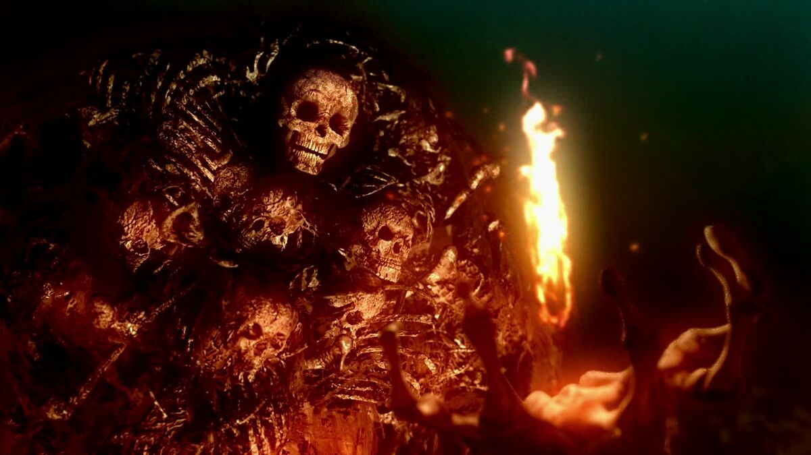

The powers that reigns the demoniac world
In the forsaken realm of Ignis Inanis, power is the currency that dictates survival and dominance. The inhabitants of this hellish world wield abilities born from the very agony that permeates their existence. These powers are not mere tools; they are extensions of the soul's torment that fuels the relentless struggle for supremacy.
The flame feed by agony
|  |
The abilities manifested in Ignis Inanis are as diverse as the tormented souls that inhabit it. From pyrokinesis that allows wielders to conjure and manipulate fire with devastating precision, to shadow manipulation that lets its users meld into darkness and strike unseen, each power is a reflection of the wielder's inner suffering and desire for control.
1. Pyrokinesis: The ability to conjure and manipulate fire is the most revered power in Ignis Inanis. Wielders of pyrokinesis can summon infernos that consume their enemies, shaping flames into weapons of destruction. This power is often seen as a manifestation of the wielder's inner torment, with the intensity of their flames reflecting the depth of their suffering.
2. Shadow Manipulation: Those who command the shadows can meld into darkness, becoming nearly invisible to their foes. This power allows for stealthy assassinations and surprise attacks, making shadow manipulators feared assassins in the chaotic hierarchy of Ignis Inanis. Their ability to control darkness is often linked to their own experiences of despair and isolation.
3. Blood Magic: Blood magic allows its practitioners to harness the life force of others to fuel their own power. This ability is often associated with the most ruthless individuals in Ignis Inanis, as it requires a willingness to inflict pain and suffering on others to gain strength.
4. Demonic Strength: Some inhabitants possess superhuman strength, enabling them to overpower their enemies with brute force. This power is often seen in the lower echelons of the hierarchy, where physical dominance is a key to survival. The wielder's strength is a testament to their resilience in the face of relentless torment.
5. Agony Projection: A rare and terrifying ability, agony projection allows its users to inflict intense pain on others from a distance. This power is often wielded by those in positions of authority, using it to maintain control and instill fear among the populace. The wielder's own suffering is channeled into this ability, making it a potent weapon of psychological warfare.
6. Space manipulation: A select few can bend the very fabric of space around them, allowing for teleportation and the creation of spatial distortions. This power is often associated with the elite, who use it to strike from unexpected angles or travel to another realms.